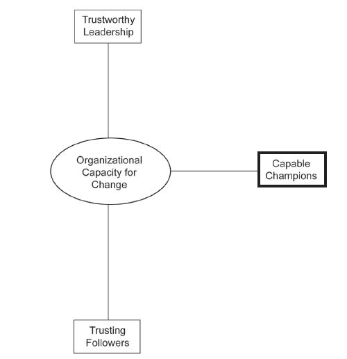

To conclude this chapter, I once gain offer seven practices that can enable an organization to cultivate capable champions. As Ralph Waldo Emerson was quoted at the beginning of this chapter, nothing great ever gets accomplished without enthusiasm. Champions are passionate enthusiasts leading change initiatives.
Many senior executives confine themselves to looking only one level down from the top and conclude incorrectly that there are not enough people to lead change initiatives. As a result, they often hire newcomers or consultants too quickly and put them in influential change agent positions. While this is sometimes unavoidable, this approach has a major downside to it since it signals that the senior leadership does not trust existing managers to champion change.
A much better approach is to hire potential change agents to help ensure the organization’s future. However, change agents are mavericks by nature, and the hiring decision either consciously or unconsciously screens out individuals “who don’t fit in.” This is why hiring decisions are often better made by those who have actually led others to be superior to staff persons with no actual leadership experience or background.
In the previous chapter, it was emphasized that senior leaders need to dialogue with and listen to their employees. This is especially true of change agents within the middle management ranks. For example, an organizational study of governmental agencies found that senior leaders of agencies that engaged in dialogue with the middle management ranks were much more successful in pursuing change than senior leaders of agencies that used a more top-down, one-way communication style. Change agents have unique and detailed perspectives on the entire organization as well as its customers. Senior leaders need two-way communication to tap this knowledge.
Unusually effective middle managers are tremendous repositories of change champions. A recent Harvard Business Review article offers insights on how to identify who the change champions might be.Huy (2001). First, look for early volunteers. These individuals often have the confidence and enthusiasm to tackle the risky and ambiguous nature of change. They often feel constrained in their current duties, and are eager for more responsibility. Give it to them.
Second, look for positive critics. Change-resistant managers constantly find reasons why a change proposal won’t work, and they seldom, if ever, offer a counterproposal. In contrast, positive critics challenge existing proposals, suggest alternatives, and provide evidence to support their argument. Positive critics offer constructive criticism and positive criticism is essential to being a change champion.
Third, look for people with informal power. They are often middle managers whose advice and help are highly sought after by people all around them. They often have excellent reputations and a lot of “social capital.” They typically operate at the center of large informal networks, and know how to work with that network successfully.
Fourth, look for individuals who are versatile. Change champions need to be comfortable with change, and they often adapt more easily to previous organization change more readily and easily than others in the organization. Those who have endured in their career shifts, relocations, or both are more likely to be comfortable with change than those who have not undergone these professional changes.
Finally, look for emotional intelligence in your middle management ranks. Individuals who are aware of their own emotions and those of others, and actively take steps to manage their feelings, are more likely to adapt to an envisioned change. Emotional intelligence is much more important than traditional logical-mathematical intelligence. Using the vernacular of the day, change champions need “emotional” bandwidth.Davis (1997).
Organizations are designed to reduce variation; change champions are oriented to creating variation. How can these two different orientations co-exist? Clearly, there needs to be a balance here. Unfortunately, most organizations only reward managers who reduce variation and punish or, more likely, ignore those who amplify variation.
Due to the messiness and uncertainty behind change, change champions are more likely to make mistakes. Organizations need to learn to find a way to reward effectiveness in addition to efficiency. Making mistakes is not efficient, but it can be effective. Does your organization recognize and reward an efficiently run organizational unit that hasn’t changed much in years as well as an organizational unit that has changed completely, but in the process angered some individuals along the way? Change champions make mistakes, but they learn from their mistakes and they ultimately succeed. As hard as it is for organizations, they need to be recognized and rewarded for doing so.
Noel Tichy argues that effective companies build leaders at every level, and they do this by creating a “leadership engine.” This is especially true for the development of change champions. In Tichy’s view, the best leaders are “enablers” rather than “doers.” They work their initiatives through other people rather than doing it all themselves. They can only accomplish this, he adds, if they develop people sufficiently to ensure that proper execution can occur at all levels.Tichy and Cohen (1997).
In large organizations, a formal leadership development program is often created to identify and accelerate the development of change champions. In medium- and small-sized organizations, an informal leadership development program is often sufficient. Regardless of the formality of the program, the key notion here is the importance of “contextualized” training and development. Traditional training and development leads to new knowledge, but has little impact on organizational change. Training and development that is applied to actual work situations through such practices as action learning projects, leadership mentoring, and applied learning endeavors go hand-in-hand with organizational change.McCall, Lombardo, & Morrison (1988).
Organization-wide change requires cross-function teams to guide the change initiative. Without a cross-functional team, unrepresented organizational units are more likely to resist the change since it is assumed that their voice is not heard or considered. Ideally, the cross-functional team will comprise respected change champions from the various subunits. At a minimum, the team must be led by a change champion.
Cross-functional teams are different from the more traditional functional team. They can speed new product development cycles, increase creative problem solving, serve as a forum for organizational learning, and be a single point of contact for key stakeholder groups. Because of this unique structure and mandate, team leadership is different for a cross-functional team than for a functional team. Specifically, technical skills are relatively less important for these types of teams, but conceptual and interpersonal skills are more important. Hence, the creation and composition of cross-functional teams can be an excellent way to identify and develop your change champions.Parker (2002).
The sponsor of a change typically comes from the CEO or top management team. Senior leaders authorize change efforts and often provide tangible resources to make that change a reality. However, they also provide intangible and symbolic resources to change champions. If the sponsor announces a change initiative, creates a guiding coalition, and then disappears from view, the organization will notice and the change initiative will suffer. If the sponsor announces a change initiative, creates a guiding coalition, makes him or herself available to support and learn about progress to the team, and regularly voice support for the change initiative, then the change initiative has a much better chance of success.
The relationship between the senior leader and the change champion is particularly important. Since the change champion lacks the authority to get things done and some changes can only be brought about by formal authority, the sponsor must use his or her authority at times to keep up the change momentum. By the same token, change champions should never undertake leadership of a change initiative without solid support and sponsorship by senior leader(s). Without effective sponsorship, change champions are highly unlikely to succeed.
In sum, lateral relationships and influence without authority are as important to organizational change capacity as vertical relationships and authority are. This chapter discusses how creating a cadre of capable champions is essential for bringing about change. Figure 5.1 "The Third Dimension of Organizational Capacity for Change: Capable Champions" contains a graphical depiction of this third dimension of capacity for change.
Figure 5.1 The Third Dimension of Organizational Capacity for Change: Capable Champions
